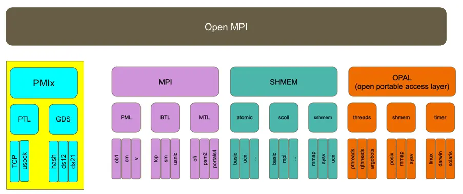
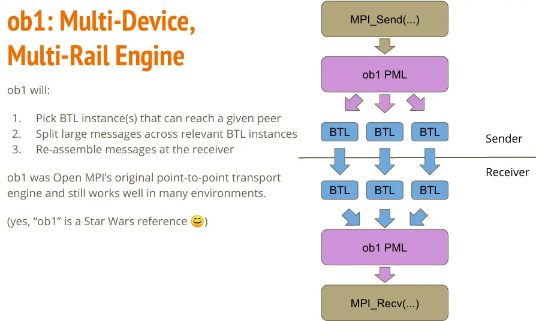

MPI¶
Note
- 使用容器运行 MPI 程序，见 Apptainer。
OpenMPI 和 MPICH 是最主要的 MPI 实现，后者衍生版本众多。下表对比了常见的 MPI 实现。
| 对比项 | OpenMPI | MVAPICH | Intel MPI | MPICH | HPC-X | Platform MPI | Spectrum MPI | |||
|---|---|---|---|---|---|---|---|---|---|---|
| 历史 | History of Open MPI 2003 由 OSU、LANL、UTK 的 MPI 实现合并而来 |
overview of the mvapich project 2002 OSU 开发，衍生自 MPICH |
（来自 Wikipedia）衍生自 MPICH | MPICH Overview 2001 由 ANL 和 MSU 开发 |
[] 打包自 OpenMPI |
IBM 闭源 | IBM 闭源 | |||
| 文档 | Open MPI main documentation | MVAPICH :: UserGuide | Intel® MPI Library Documentation | Guides \ MPICH | ||||||
| mpirun 指向 | prun(v5.x)orterun(v4.x) |
mpiexec.hydrampiexec.mpirun_rsh（推荐） |
mpiexec.hydra |
hydra（默认） gforker（编译选项） |
||||||
| Host 选项 | -H/--host node1:1,node1:1<br>--hostfile hf |
-np 2 node1 node2<br>-hostfile hf |
-hosts node1:1,node2:1<br>-f/-hostfile/-machine/-machinefile hf |
-f hf |
||||||
| Hostfile 格式 | node1 slots=n |
node1:n:hca1 |
node1:n |
node1:n |
||||||
| 例程/测试 | examples/ | OSU Benchmark | Intel MPI Benchmark | exmaples/make testing |
OSU Benchmark IMB examples |
mpitool | ||||
| 信息 | ompi_info --all |
mpiname -a |
impi_info |
mpiexec -info |
||||||
| 环境变量 | --mca mca_base_env_list VAR1,VAR2,...OMPI_* 自动导出-x 已弃用 |
-export 不覆盖-export-all 全覆盖 |
||||||||
| （模板） | | |
| |
| |
`` |
MPI 间的 ABI 兼容性信息见：
- MPICH ABI Compatibility Initiative | MPICH：MPICH、Intel MPI、MVAPICH2
-
似乎在 2023 后，MPICH 和 OpenMPI 家族开始着手统一 ABI 了。
OpenMPI¶
Quote
基础概念¶
我们从 2020 年的 The ABCs of Open MPI 系列讲座开始。
OpenMPI 是一个大型项目，采用模块化组织，称为 MCA（Modular Component Architecture），从上至下分为 Project、Framework、Component：

默认情况下，所有 component 被编译为动态链接库（Dynamic Shared Objects, DSO），可以按需加载：

到 OpenMPI v5.0，共有如下 FrameWork
-
MPI：
-
coll：MPI Collecitves，实现MPI_BCAST、MPI_BARRIER、MPI_REDUCE等集合通信。在 v4.1.0 后，增加了可选的组件，并且可以对默认的通信算法选择进行调优。
-
op：MPI Reduction Operations osc：MPI One-sided Communications-
pml：MPI Point-to-Point Communications，实现MPI_SEND、MPI_RECV等点对点通信。可选：-
ob1：多设备多链路引擎。它可以选择多个能够到达目标的 BTL 组件，并实现负载均衡。
-
cm：用于驱动支持硬件消息标签匹配的网络接口（matching network），比如 iWARP、OminiPath
-
ucx：使用 UCX 通信库，用于 InfiniBand 或 RoCE 设备
-
-
topo：MPI Topologies
-
-
底层传输：
-
btl：Byte Transport Layer可选组件：
ofi：Libfabricself：loopbacksm：共享内存tcp
其余不常见的略过。
-
bml：BTL Multipliexing Layer mtl：Matching Transport Layer，不常用，略
-
-
文件：
-
io：MPI IO，实现MPI_FILE_OPEN、MPI_FILE_READ、MPI_FILE_WRITE等文件操作。可选：ompio：默认romio：来自 MPICH
-
fbtl：MPI File Byte Transfer Layer fcoll：MPI File Collectivesfs：MPI File Managementsharedfp：MPI shared file pointer operations
-
-
其他：
hook：Generic Hooksvprotocol：Virtual Protocol API Interposition
通信库¶
通信库主要通过 PML 选择。一般会采用如下组合：
--mca pml ucx
--mca pml_ucx_verbose 100
--mca osc_ucx_verbose 100
-x UCX_NET_DEVICES=
-x UCX_LOG_LEVEL=trace
IB 和 RoCE 设备支持：
-
openib在 OpenMPI 5.1.x 后弃用。与之相关的变量有： -
ucx：IB 和 RoCE 设备的首选模块，相关变量有：
PMIx¶
PMIx（Process Management Interface）：用于与 slurm 这样的资源管理器（Resource Manager，RM）沟通。因为 PMI 的存在，我们能够直接使用 srun 运行 OpenMPI 程序，取得与 mpirun 等效的效果。
MPI 与资源管理器可以通过三种方式交互：
- Slurm 启动 MPI 并行程序，并通过 PMI API（Process Management Interface）调用执行初始化。
- Slurm 分配资源，然后由
mpirun基于 Slurm 的基础设施启动并行程序。srun就是这种方式。 - Slurm 分配资源，然后由
mpirun通过 SSH 等其他机制启动并行程序。这种方式下，Slurm 无法进行资源管控和追踪。
可以阅读 Slurm: PMIx - Exascale Process Management Interface 了解更多。
ORTE 与 PRRTE¶
ORTE 就是
orterun、mpirun、mpiexec 是同一个文件，见 Ubuntu Manpage: orterun, mpirun, mpiexec - Execute serial and parallel jobs in Open MPI.
如果要阅读 ORTE 源码，可以在 v4.x 下找到 orte 文件夹，其中 orte/tools/orterun/main.c 就是 orterun 的入口。
在 OpenMPI v5.0 中，PRRTE 取代了 ORTE。现在，prun 的入口在 prrte/src/tools/prun/main.c。
构建和运行¶
构建：
OpenMPI 内置了某些依赖（如 hwloc 和 libevent），但是也可以用 --with-hwloc 等选项替换为外部版本。
要构建支持 CUDA 的 OpenMPI，需要：
- 构建支持 GDR 的 UCX
- 然后构建支持 CUDA 和 UCX 的 OpenMPI
查看当前构建的信息：
运行：
- OpenMPI 使用 Slot 作为资源分配单位，有多少个 Slot 就可以运行多少个进程。
- 默认：处理器核数。
- 使用超线程核心数：用
--use-hwthread-cpus开启，常见为 2 倍处理器核数。可以在lscpu中的Thread(s) per core查看。 - 资源管理器调度：从资源管理器获取 Slot 数。
- 需要注意：Slot 数和硬件没有关系，可能比硬件核数多，也可能比硬件核数少。
Example
在 OpenMPI v4.x 中：
$ ompi_info --all | grep btl_openib_if_include
MCA btl openib: parameter "btl_openib_if_include" (current value: "", data source: default, level: 9 dev/all, type: string)
Comma-delimited list of devices/ports to be used (e.g. "mthca0,mthca1:2"; empty value means to use all ports found). Mutually exclusive with btl_openib_if_exclude.
可以通过下面的方式：
调试选项：
源码阅读¶
构建系统¶
从 Makefile 开始，构建时我们使用 all 这个目标，它进入到所有子文件夹并执行构建，见 Where is the target all-recursive in makefile? - Stack Overflow。
运行时¶
MCA¶
BTL¶
openib¶
MPICH¶
MPICH 是 MVAPICH、Intel MPI 等众多 MPI 实现的基础。MPICH 维护四个组件：
- mpich
- hydra：启动器，衍生版本大多也支持 hydra 启动
- libpmi
- mpich-testsuite
简单梳理：
- Process Manager（PM）：默认 hydra。编译时可选 gforker，仅在单节点上通过 fork 和 exec 创建进程。
- Communication Device：MPICH 中的通信分为 device 和 module 层。
ch3意思是 3rd version of Channel interface。通过编译时--with-device=ch3:channel:module可选组件。nemesis是默认 channel，单节点用 shared-memory，跨节点用 socket。- 默认：
ch4，支持的 module 有 ofi、UCX、POSIX 共享内存。
构建和运行¶
Hydra¶
MVAPICH¶
Quote
- The MVAPICH2 Project Latest Status and Future Plans：在 SC 21 进行的一次报告，介绍了 MVAPICH2 的最新进展和未来计划。
这可能是目前最先进的 MPI 实现，受 NVIDIA 喜爱，并且也是神威 - 太湖之光所使用的 MPI 实现。
MVAPICH 提供非常多种细分的版本，可根据需求选择。一般选用 MVAPICH2（源码分发）或 MVAPICH2-X（打包分发），提供最全面的 MPI 和 IB/RoCE 支持。
用户手册见 MVAPICH 首页 Support->UserGuide。
以 MVAPICH2 为例梳理：
- 通信：基于 MPICH 的 CH3 改造，通过 OpenFabric 支持了多种 RDMA 通信，例如 OFA-IB-CH3、OFA-RoCE-CH3 等。
构建和运行¶
日志输出需要在构建时开启：
mpirun_rsh \
MV2_HOMOGENEOUS_CLUSTER=1 \
MV2_SHOW_ENV_INFO=2 \
MV2_DEBUG_FORK_VERBOSE=2 \
MV2_DEBUG_CORESIZE=unlimited \
MV2_DEBUG_FT_VERBOSE=1 \
MV2_DEBUG_SHOW_BACKTRACE=1 \
MV2_DEBUG_MEM_USAGE_VERBOSE=2 \
MV2_USE_RoCE=1 MV2_DEFAULT_GID_INDEX=3 MV2_USE_RDMA_CM=0 \
build/default/libexec/osu-micro-benchmarks/mpi/pt2pt/osu_bw
网络接口选择：
OSU Benchmark¶
Quote
Intel MPI¶
Quote
运行与调试¶
加载环境：
-
oneAPI：
-
IntelMPI（老版本）：具体路径可能有变化，仅作参考
对 Intel MPI 来说，mpirun 是 mpiexec.hydra 的包装。其选项有全局选项和局部选项之分，一般以 g 开头的参数是全局选项，下文不对全局和局部选项分别介绍。可以编写文件保存选项，使用 -configfile 指定配置文件，# 注释。./mpiexec.conf 会自动加载。
- 环境变量
-genv <ENVVAR> <val>指定运行时环境变量，常用的有：OMP_-genvall, -genvnone控制是否传递环境变量
- profiling:
-trace-aps-mps
- 设备：
-iface
- 运行参数：
-n, -np进程数-env环境变量-path可执行文件
重要环境变量：
!!! tips I_MPI_OFI_PROVIDER 优先于 FI_PROVIDER。
更多选项参阅 Intel® MPI Library Developer Reference for Linux* OS 中的 Command Reference 和 Environment Variable Reference 章节。
日志输出：
调试：
调试器似乎不能和日志一起用，否则调试器命令输入会有问题。
-
oneAPI：
-
Intel MPI:
IMB Benchmark¶
Intel® MPI Benchmarks 包含以下组件：
- IMB-MPI1 – 用于 MPI-1 功能的基准测试。
- 用于 MPI-2 功能的组件：
- IMB-EXT – 单边通信基准测试。
- IMB-IO – 输入/输出基准测试。
- 用于 MPI-3 功能的组件：
- IMB-NBC – 非阻塞集合（non-blocking collective，NBC） 操作的基准测试。
- IMB-RMA – 单边通信基准测试。这些基准测试测量 MPI-3 标准中引入的远程内存访问（Remote Memory Access，RMA） 功能。
- IMB-MT – 在每个 rank 内运行的多线程 的 MPI-1 功能基准测试。
使用方法见：
一个简单的例子
要获取更多调试信息，请在运行前设置 I_MPI_DEBUG（可以设置为 0 到 5）。
下面的命令行在基准测试列表 IMB-MPI1 中只执行 PingPong 基准测试。
其他 MPI 实现¶
Platform MPI¶
这是由 IBM 维护的一个古老的 MPI 实现。
它使用一个同样古老的通信库 DATL（Direct Access Transport Libraries），已于 2016 年停止支持。
运行命令例：